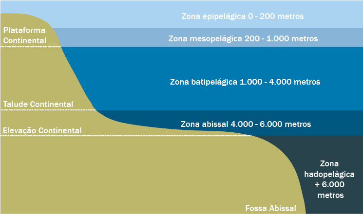

Explicando as zonas abissais
Existem diferentes profundidades no oceano, e cada uma delas possui um nome diferente. Quanto mais profunda a zona, mais inacessível ela se torna e menos explorada ela é.
Algumas camadas do oceano são tão profundas que nem a luz solar consegue chegar lá, fazendo com que as temperaturas fiquem muito baixas, e além disso, a pressão da água é tão grande que os animais que lá vivem precisam se adaptar para conseguir sobreviver no local, isso acaba deixando a aparência bizarra em muitos deles. Pelo fato de não existir luz no local, algumas criaturas tem partes bioluminescêntes em seus corpos, para conseguir atrair as presas e conseguir se alimentar.
O ser humano conhece mais o sistema solar do que o próprio oceano. Extima-se que só conseguimos explorar cerca de 20% dos nossos oceanos, o que se pararmos para pensar é muito interessante já que estamos tão próximos, mas ao mesmo tempo tão distante desse conhecimento.
Existem 5 "camadas" nas quais os biólogos e cientistas separam os oceanos. São elas:

Um ser humano sem nenhum meio de locomoção aquático, consegue ficar apenas na zona epipelágica e na parte mais rasa da zona mesopelágica. O recorde oficial de "Mergulho Mais Profundo" pertence a Ahmed Gamal Gabr, mergulhador egípcio que alcançou 332,35 metros de profundidade em alto mar. Foram 15 minutos para realizar a descida completa e cerca de 13 horas para retornar à superfície.
Já com um submarino o mergulho mais profundo foi em 10 de novembro, quando co norte-americano Victor Vescovo chegou a 10.934 metros abaixo da superfície, usando o submarino DSV Limiting Factor para chegar na região mais profunda da fossa, conhecida como “Abismo Challenger”.